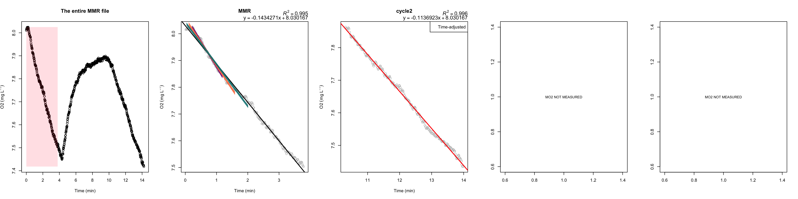
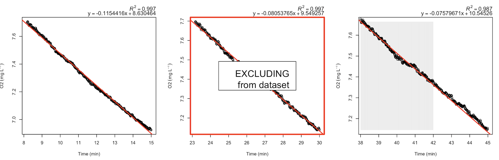

Step-by-step example of analysis in R
Example code https://github.com/kraskura/AnalyzeResp_0/blob/main/R/Test_AnalyzeResp_0_clean.R
Example materials Directory on Github
Navigate
STEP 1: Set up, working directories, and formatting data files
source("./AnalyzeResp_0.R") # ./ directs to a currently active working directory. To ensure the code is available, try:
list.files()
setwd() # set any working directory dedicated to metabolic performance analysis.
1.1. (DONE ONCE) Download the script to any local directory.
1.2. Source the script containing all functions.
If not done, the functions will not be accessible during the current R session. Alternatively: go to Test_AnalyzeResp_0_clean.R and copy-paste the function in the console and run the code.
1.3. (DONE ONCE) Set up analysis working directory space:
Using these functions, produce and save locally many .csv and .png
files. Currently, there are two options: + in the set working directory
(folder on the user’s computer). (use getwd() to confirm
the location). This is default in functions written as:
path = "./" + in various folders automatically placed
in(suggested for organization). This requires STEP 1 to run the next
line of code:
organize_MR_analysis(create = "Full") # will create a full suite of folders and subfolders within in prep to analyze SMR, MMR, AAS
Documentation:
organize_MR_analysis
Note! Do not rename the folders. Much agreed that the names of these folders are not intuitive in the current version. Suggestions with alternative names for the export files, directories, and sub-directories are always welcome
Outcome
1.4. (DONE ONCE) Transition from raw data .txt files to .csv files
# for MMR files: txt_csv_convert(txt_file = "./jul04_2019_opasize_box4_mmr.txt", path = "MANUAL" , N_Ch = 4) # formatted csv files is automatically save them in "MANUAL/csv_files" subfolders txt_csv_convert(txt_file = "./jul04-2019-opasize-box4-mmr.txt", path = "MANUAL" , N_Ch = 4) # formatted csv files is automatically save them in "MANUAL/csv_files" subfolders # for SMR overnight files: txt_csv_convert(txt_file = "./jul04_2019_opasize_box4_smr.txt", path = "AUTO" , N_Ch = 4) # formatted csv files is automatically save them in "AUTO/csv_files" subfolders txt_csv_convert(txt_file = "./jul04-2019-opasize-box4-smr.txt", path = "AUTO" , N_Ch = 4) # formatted csv files is automatically save them in "AUTO/csv_files" subfolders # and example for files that were used to run bacterial respiration background: (here not considered) txt_csv_convert(txt_file = "./jun01_2021_box1_back-allRespos.txt", path = "BACTERIAL_RESP" , N_Ch = 4)
The data files are in .txt format when using PyroScience software that interfaces with the FireSting oxygen meter. But, the analysis functions processes .csv files transformed to contain values only relevant for the analysis (e.g., O2, temperature, time).
- The transformation from .txt to csv file can be done with
txt_csv_convertfunction. - Suggestion: work with copies, not original data files.
Quick steps:
- Set working directory. If the
organize_MR_analysiswas used, then the setwd with .txt files should be the parent directory of “AUTO”, “MANUAL”, “MMR_SMR_AS_EPOC” folders.- Specify the
path(see code example above) - AUTO = refers to SMR analysis for files that have been run on automatic timed flush:measure cycles.
- MANUAL = refers to MMR analysis for files that have been run adjusting times manually.
- Specify the
More info can be found here
Documentation:
txt_csv_convert
Outcomes:
- if using
path = ".": a new .csv file will be created and saved in the local directory (uselist.files()to confirm) - if using
path = "AUTO"orpath = "MANUAL": a new file will be created in ‘csv_files’ subfolder
In both cases, the original non-modified .txt file remains in the current working directory. The .txt files can now be moved elsewhere; they are not used in any consecutive steps.
1.5. OPTIONAL (DONE ONCE). Converting O2
measurement values
convert.o2.Firesting(csv.data = "FileToCovert.csv", n_ch = 4, sal = 35)
setwd(".../MANUAL/csv_files/")
n.mmr.files<-length(list.files())
mmr.files<-list.files(".../MANUAL/csv_files/")
for (i in 1:n.mmr.files){
mr.file<-mmr.files[i]
convert.o2.Firesting(csv.data = mr.file, n_ch = 4, sal = 35)
}
The MMR_SMR_AS_EPOC calculates metabolic rates in
mgO2 L^-1 kg^-1. When the oxygen level unit in the raw data
files is not mgO2 L^-1, it will require conversion.
- Common conversion: from air saturation % (AS%) to mgO2 L^-1
- The function depends on rMR::DO.unit.convert and is a modified
version of it.
- Similarly, also see similar modification: FishResp::conver.rMR
- This must be done on each file
- Suggesting writing a
forloop for efficiency (see code example below)
- Suggesting writing a
Documentation:
convert.o2.Firesting
STEP 2: Analysis of MMR: finding the steepest decline between O2 levels ~ time
# setting working directory
setwd("./MANUAL/csv_files/")
# calling the MMR function
MMR(data.MMR = "./jul04_2019_opasize_box4_mmr.csv", # specify the .csv data file
cycles = 2, # this file has two measurement (closed phase) cycles
cycle_start = c(0, 11.02), # first cycle start at 0 min, and 2nd cycle starts at 11.2 min (relative time of the file)
cycle_end = c(4.0, 15.95), # first cycle ends at 4 min, and 2nd cycle ends at 15.95 min (relative time of the file)
mmr_Ch1 = 1, # an animal in channel 1 has the MMR measured in the first cycle.
mmr_Ch2 = 2, # an animal in channel 2 has the MMR measured in the second cycle.
mmr_Ch3 = 1, # an animal in channel 3 has the MMR measured in the first cycle.
mmr_Ch4 = 2, # an animal in channel 4 has the MMR measured in the second cycle.
clean_Ch1=c(0,0), # channel specific timeframes for the MMR measurement
clean_Ch2=c(0,0),
clean_Ch3=c(0,0),
clean_Ch4=c(0,0),
path ="Folders", # this will automatically save output files in the dedicated output folders
N_Ch = 4, # 4 channel firesting, 1 temperature probe
date_format = "m/d/y", # the format of the date
inv.data = NA) # no inventory data to perform more detailed user-defined measurement adjustments.
2.1 Set the correct working directory
To use the MMR function and access converted data .csv
files, set the working directory to where the .csv files are
located.
2.2. Parametrize and run MMR
See annotation directly by the example code.
The following script is to obtain oxygen decrease rates over time during a user-specified measurement cycle. This code analyzes MMR in up to 4 individuals, each associated with one probe = channel in FireSting oxygen sensor (FireSting boxes).
If the MMR data file contains less than 3 min of data, the iterative “sliding window” analysis to find the steepest slope representing MMR measurement is not performed. Otherwise, it always calculates the regression parameters for the provided duration of the measurement.
Documentation:
MMR
Outcomes:

on GitHub: AnalyzeResp_0/Test/MANUAL/channel_plots/
- one figure produced per individual
- the first panel always has the full duration of the trend presented, and the shaded section shows the user-indicated MMR section
- the user-indicated MMR cycle plot, in this case, is the first
measurement cycle.
- The plot is labeled MMR (second panel)
- The colored slopes are the steepest i) 120 s (green), ii) 90 s (orange), iii) 60 s (purple); black regression is for a full duration
- regressions parameters of all full slopes are noted above the plot
- if any (not MMR) measurement cycle is adjusted using ‘inventory file,’ it will be indicated in the legend box (see third panel, cycle 2)
2.3. OPTIONAL
MMR inventory or channel-specific cleaning: What is it and how to use it?
Download Excel template from GitHub: AnalyzeResp_0/Test/MANUAL_inventory_template.xlsx
| Column | Description |
|---|---|
| date | Specify date in the same format as it appears in the name of the original file; here, 3-letter month + 2-number date (e.g., jun04, jan15, oct20, aug01). Important but inconvenient: excel tends to default to one of the data formats. Counteract that by typing the apostrophe before text: ’jun04 |
| box | The numeric of the Firseting box. |
| channel | The Number of the channel (1-4) |
| start | indicate the start time (minutes) of the measurement section to be KEPT; add 0 to discard this cycle. |
| end | indicate the end time of the section to be KEPT; add 0 to discard this cycle. |
Description from the example image above:
- row 2: not-MMR cycle 2 needs to be
time-adjusted
- Specifies that the filename where: box4_jul04, box4-jul04 in any combination (not case sensitive, and not order specific).
- When
MMRfunction is applied to this file, the timeframe of usable data for channel 3 will be adjusted to relative start at minute 10.9 and end at minute 13 (relative time in the data, assuming the file begins at time 0 min). This timeframe is not the corrected section for 2nd measurement cycle.
Tips and notes:
- Be sure that the format of the inventory file is .csv and that it is saved in the folder containing all data .csv files
- To clean actual MMR cycle, use
MMRargumentclean_Ch1, clean_Ch1, clean_Ch1, clean_Ch1as needed.
STEP 3 Analysis of SMR: analyzing each measurement cycle recorded on repeated cycles
Two runs of SMR function for each data file may be
necessary.
- Parametrized run to get files for visual assessment of each measurement’s quality.
- Parametrized run to apply any time adjustments and cleaning, as decided after visual assessment of the data.
setwd("../../AUTO/csv_files")
SMR(data="jul04_2019_opasize_box4_smr.csv",
inventory_data=NA,
cycle_start=8, # length of the flush (min 0 - 8 relative time for each measurement cycle)
cycle_end=15, # length of a full cycle, with open and closed phases together
chop_start=10/60, # this will take the first 10 sec off as a waiting period. It can be decimal
chop_end=0,
flush_plot="OFF",
N_Ch=4,
path="UseFolders",
date_format = "m/d/y")
3.1 Set the correct working directory
To use the SMR function and access correct converted
data .csv files, set the working directory to where the .csv files are
located.
3.2. First run: A parametrized run of SMR
without any cleaning
The rate of oxygen decrease (O2 levels ~ time; e.g., mgO2 min^-1) for all automatically isolated measurement cycles.
From the example code above: + The full respirometry cycle
(flush:measure) length is 15 min long: cycle_end=15 +
8-minute flush: cycle_start=8 + None of the measurement
cycles will be modified or otherwise cleaned (no inventory data):
inventory_data=NA + The first 10 s from each measurement
(closed) will be discarded as “wait period” for water mixing:
chop_start=10/60 (see notes below)
An additional wait period can be used between the flush and measurement (flush:wait:measure) Rosewarne et al 2016, See Fig 3. In the provided example, the first 10 seconds would be equivalent to wait period and excluded from regression analysis.
When something seems to be out of order with the auto cycles, run the
code with flush_plot = TRUE and check whether the
flush:measure cycle lengths are specified correctly. Otherwise, it may
be better to keep flush_plot = FALSE because it takes more
time and computer memory.
Documentation:
SMR
Outcomes:

on GitHub: AnalyzeResp_0/tree/main/Test/AUTO/plots_channel
- A snapshot of three measurement cycles for a specific channel. There
are a total of 88 measurement cycles in a full example figure.
- One figure produce for each channel.
- Red line: linear regression slope
- Regressions parameters of all full slopes are noted above the plot
- Time is in relative scale, assuming the file begins at time 0

on GitHub: AnalyzeResp_0/tree/main/Test/AUTO/plots_summary_respo
- File showing the recorded data all on one timescale
- panels top to bottom: Channel 1 O2 trend, channel 2 O2 trend, channel 3 O2 trend, channel 4 O2 trend, temperature trend (scale is set to 5- 35ºC)]
- in panels 1-4:
- solid red line: the mean O2 levels in the system during the trial
- the dashed line: the lowest reached O2 levels in the system during the trial
- if the Channel has no data, it shows as a straight line at zero
3.3. OPTIONAL: Second run with data cleaning guidance
SMR inventory or channel-specific cleaning: What is it and how to use it?
SMR(data="jul04_2019_opasize_box4_smr.csv",
inventory_data= "smr_inventory_test.csv", # <<< Added after visual assessment of the data
cycle_start=8,
cycle_end=15,
chop_start=10/60,
chop_end=0,
flush_plot="OFF",
N_Ch=4,
path="UseFolders",
date_format = "m/d/y")
No change running the SMR function unless there is a
need to modify the wait-period, or cycle length. The only addition is
the inventory data file (in .csv format). The inventory file
must be in the csv_files folder.
Excel template on GitHub: AnalyzeResp_0/Test/AUTO_inventory_template.xlsx
| Column | Description |
|---|---|
| date | The date in 3-letter month + 2-number date (e.g. jun04, jan15, oct20, aug01… ). Important but inconvenient: excel tends to default to one of the data formats. Counteract that by typing the apostrophe before text: ’jun04 |
| box | The numeric of the Firseting box. s |
| channel | The Number of the channel (1-4) |
| cycle_file_start | To save time, add ‘0’ if both the start and end are provided. Find the exact start time for the wanted cycle in ’_analyzed.csv’ file ‘min_start’ column, and add that to exclude the cycle. |
| sectioned_slope_start | indicate the start time (minutes) of the measurement section to be KEPT, write 0 to discard this cycle. |
| sectioned_slope_end | indicate the end time of the section to be KEPT, write 0 to discard this cycle. |
| type | Not currently used. It can be used for user notes. |
Description from the example image above:
- _rows 1-3: The specific timeframes (sectioned_slope_start –> sectioned_slope_end) will be used to estimate metabolic rates. (see plotted example below)
- row 4: The measurement cycle starting at 23.16 min will be entirely excluded from the analysis. (see plotted example below)
Tips and notes:
- No cleaning necessary for measurement cycle with low R2.
These measurement cycles will be automatically excluded using
MMR_SMR_AS_EPOCand setting desired R2 thresholds ensuring automatized consistency - Efficiency tip: writing and editing the inventory file in excel (.xlsx), transfer the necessary part to a new file in .csv
- The format date must be the same as written in the name of the .csv file.
- To exclude the cycle indicate start and end times for the slope as 0 0
- Most errors during cleaning are due to typos
Outcomes
One figure for each channel is plotted again. This time with annotation adjustments according to the cleaning guidelines:
- grey shaded sections indicates the sections approved acceptable for further analysis, representative of animal O2 uptake rate measurement.
- red frame with a message: the measurements that are excluded entirely from the final data analysis
- orange frame: the measurements, not cleaned but has low R2, only used to bring awareness of to the quality or scatter of the data

NEED TO SPLIT DATAFILES?
Example scenarios:
- MMR/MANUAL and SMR/AUTO data are recorded in one continuous file.
- SMR/AUTO files does not start with a flush
- More than one SMR/AUTO file with various measurement times each
(e.g., half a file contains automatic measurements of 10min:5min
flush:measure, the other half is 9min:6min flush:measure); ! these
should be combined again after
SMRanalysis. See STEP 5
Tips and notes:
- Identify the files that need to be split, move them into their own dedicated local directory (folder on the computer), and split the files there. ! be sure to confirm the split is at the correct place.
- Set the working directory where the file is located. Output files and newly split .csv files will be saved locally
# 4 channnel Firesting example
csv_file_split(data="Aug16_2017_Box1_fullfile.csv",
split_data_name="TEST_split-4ch",
cycle_full_min=10, # relevant for plotting when split file is SMR
timeSplit=58.5, # in minutes
split=TRUE,
N_Ch=4,
date_format="m/d/y")
# 8 ch Firesting example (4 O~2~ probes, 4 temperature sensors)
csv_file_split(data="Sep24_2019_box0_fullfile.csv",
split_data_name="TEST_split-8ch",
cycle_full_min=10,
timeSplit=42,
split=TRUE,
N_Ch=8,
date_format="d/m/y") # notice the different time/date format
Documentation
csv_file_split
Outcomes
+ Two .csv files
+ Each file starts at a relative time of 0 min (therefore, best in cases when MMR and SMR data are split)
STEP 4 Analysis of background respiration using SMR function
4.1 Set the correct working directory
To use the SMR function and access correct converted
data .csv files, set the working directory indicating location
of the background files
4.2. Getting regression parameters for background respiration
Consider Options:
- If the background respiration was run on automatic repeat cycles (similar or same as the overnight resting metabolic rate measurements):
+ Use the `SMR` function, parametrize it accordingly. (See step 3)- If the background was run on manually timed measurement cycles
+ 2 cycles, and the file starts with flush: can use the `SMR` function
+ 2 + cycles, and the file starts with a closed phase measurement: split the files and run `SMR` function (can technically analyze these regressions using the `MMR` function, but that is more computationally demanding)
STEP 5 Analysis of MMR, RMR, aerobic scopes and recovery
MORE THAN ONE ANALYSED SMR FILE REPRESENTING ON TRIAL?
The MMR_SMR_AS_EPOC function accepts one .csv file with
considered SMR regression parameters and one .csv file with MMR
regression parameters. It is possible to have more than one SMR
file. Several files with SMR measurements can be combined and
properly formatted using combine_smr function.
Example scenarios:
More than one SMR/AUTO file was created with various measurement times each (e.g., half a file contains automatic measurements of 10min:5min flush:measure, the other half is 9min:6min flush:measure)
More than one SMR file for other experimental or technical reasons
setwd(".../AUTO/csv_analyzed/") combine_smr(smr_files=c("jun01_2021_box1_smr1_mgO2L_analyzed.csv", "jun01_2021_box1_smr2_mgO2L_analyzed.csv", "jun01_2021_box1_smr3_mgO2L_analyzed.csv"), date_format = "m/d/y")Outcomes
The combined file with a name tag “GLUED_nX” (where x = n of files)
File is accessible:
- in the local directory (check
list.files() - in the local folder “MMR_SMR_AS_EPOC/input_files”, if the
organize_MR_analysiswas used in step 1 .
- in the local directory (check
5.1. Set working directory
This working directory needs to contain both:
- data processed by
MMRfunction: e.g., “jul04_2019_opasize_box4_mmr_analyzed.csv”, - data processed by
SMRfunction: e.g., “jul04_2019_opasize_box4_smr_analyzed.csv”,
5.2. Parametrize and run
MMR_SMR_AS_EPOC
setwd(".../MMR_SMR_AS_EPOC/csv_input_files")
MMR_SMR_AS_EPOC(
data.MMR = "jul04_2019_opasize_box4_mmr_analyzed.csv",
data.SMR = "jul04_2019_opasize_box4_smr_analyzed.csv",
AnimalID = c("FISH1","FISH2","FISH3","FISH4"),
BW.animal = c(0.065,0.068,0.061,0.062),
resp.V = c(1.9,1.9,1.5,1.5),
r2_threshold_smr = 0.85,
r2_threshold_mmr = 0.9,
scaling_exponent_mmr = 1,
scaling_exponent_smr = 0.89,
epoc_threshold = 1.1,
drop_ch = 1,
recovMMR_threshold = 0.5,
plot_smr_quantile=10,
mo2_val_for_calc = "mo2_1kg", # options: "mo2_1kg", mo2_common_mass_kg, mo2_per_individual_kg
end_EPOC_Ch = c((4.5*60), NA, NA, (5*60)), # must match the N(channels), use NA otherwise, input in minutes
# mmr_type = "mean",
min_length_mmr = 120,
spars_levels = c(0.1, 0.3),
background_prior = "jul04_2019_box4_back_pre_dummy_analyzed.csv" ,
background_post = "jul04_2019_box4_back_post_dummy_analyzed.csv" ,
background_slope = NULL,
background.V = NULL,
MLND=TRUE,
match_background_Ch = TRUE,
mmr_background = "SAME_slope",
background_linear_gr = TRUE,
path="Folders",
date_format = "m/d/y",
N_Ch = 4,
common_mass= 1) # in kg
Examples and explanations for setting various parameter values from the code above:
- R^2 thresholds; regression slopes that are below these thresholds
are excluded.
- The regression R2 cut off is 0.9 for MMR
(
r2_threshold_mmr = 0.9) - The regression R2 cut off is 0.85 for SMR
(
r2_threshold_smr = 0.85).
- The regression R2 cut off is 0.9 for MMR
(
- Length of MMR measurement: The MMR value will be calculated from the
steepest 120-second slope (
min_length_mmr = 120).- If this length is not sufficient to keep the R2 at the chosen 0.9 level, it will automatically go to the next longer sliding window option (in this case, it would be 180 seconds).
- The goal is to keep R2 at above the set threshold while providing the longest possible MMR measurement period
epoc_threshold = 1.1: the time of full recovery will be estimated as the time it takes for the animal to recover from its MMR level to 110% SMR. (= 1.1 X SMR).recovMMR_threshold = 0.5: finds the time it takes and metabolic costs for the animal to recover from its MMR to 50% MMR (EPOC to 50% MMR and time to 50 % MMR)drop_ch = 1: channel 1 will be entirely excluded from the analysisscaling_exponent_smr = 0.89: scaling for SMR (all data.SMR) values will be corrected to common mass using 0.89 scaling exponent (default 1 kg, but can be specified usingcommon_massarg).scaling_exponent_mmr = 1: isometric scaling of MMR measurementend_EPOC_Ch = c((4.5*60), NA, NA, (5*60)): manually assigned time (minutes) it took an animal to recover, assigned to each channel individually (Channel-1 = 4.5 hours, channel-4 = 5 hours, not specified for channel-2 and channel-3).spars_levels = c(0.1, 0.3): the smoothing level for estimating recovery costs, the least smooth (0.1) and mildly smooth (0.3) trends will be plotted. The “spar” is unitless, somewhat arbitrary in that sense.- In this example, background respiration was measured before and after the trial, and these background files are provided (see step 4).
5.3. Minimally parametrized MMR_SMR_AS_EPOC
run
MMR_SMR_AS_EPOC( data.MMR = "jul04_2019_opasize_box4_mmr_analyzed.csv",
data.SMR = "jul04_2019_opasize_box4_smr_analyzed.csv",
AnimalID = c("23-rbred","27-ltred","27-lbred","27-rtred"),
BW.animal = c(0.065,0.068,0.061,0.062),
resp.V = c(1.890,1.890,1.4475,1.4475),
r2_threshold_smr = 0.85,
r2_threshold_mmr = 0.9,
min_length_mmr = 120)
Suggestions:
- Specify
pathif previously usedorganize_MR_analysisfunction. Alternatively, the exports and imports compile in one folder. Check usinggetwd()andlist.files() - Specify
date_format = "m/d/y"(currently the default as this is the most common date format in Firesting .txt files, but if that is not the case for the files on hand, the function will error
5.4. Other occasions:
MMR_SMR_AS_EPOCcan be run only to estimate SMR. Specify,data.MMR = "none". See documentationMMR_SMR_AS_EPOCcan be run only to estimate MMR. Specify,data.SMR = "none". See documentation
Documentation:
MMR_SMR_AS_EPOC
Outcomes:

on GitHub: AnalyzeResp_0/tree/main/Test/MMR_SMR_AS_EPOC/plots_ch_EPOC
Metabolic rates across the duration of the experiment are particularly relevant when estimating recovery performance (EPOC and its relevant metrics).
- Figure identifier: “EPOC_PLOT.png”
- The Number of panels determined by values provided in the
spar_levelargument - The first measurement in this trend is MMR
- The blue line connects dots according to the selected smoothness
level (
spar_level) - The colored horizontal lines show the SMR estimates using 5 different methods
- The vertical lines
- Dashed pink: Time to 50% MMR
- Dashed grey: hourly marks (1, 2, 3, 4, 5 h into a trial)
- Colored lines (overlapping in the image): estimate time to EPOC according to different types of SMR

on GitHub: AnalyzeResp_0/tree/main/Test/MMR_SMR_AS_EPOC/plots_min_values_SMR
Metabolic rates across the duration of the experiment. This figure highlights the MO2 measurements used to estimate SMR/RMR, and find resting level metabolic rates.
- Figure identifier: “_SMR_PLOT_SMR_analyses”
- Plotted are two facet plots
- One facet for each channel
- Discarded channels are not plot plotted
- The channel ID is in the grey bar on the right side
- Top panel facet plot:
- Red symbols: 5 lowest values reported
- Green symbols: after excluding the lowest 5 MO2 values (in red) the lowest 10 MO2 values (i.e., the lowest 6-15 values)
- Bottom panel facet plot:
- Turquoise: the lowest 10th percentile MO2 values
- Turquoise + Blue: the lowest 15th percentile MO2 values
- Purple + Turquoise + Blue: the lowest 20th percentile MO2 values
on GitHub: AnalyzeResp_0/tree/main/Test/MMR_SMR_AS_EPOC/plots_methods_sum_SMR
The comparison of estimated SMR/ RMR values using different methods:
- Figure identifier: “SMR_PLOT_SMR_methodsALL.png”
- Channels are plotted in different colors
- Number in the bubble is the Number of MO2 values used for calculations
- SMR_low(n^th)quantile: the SMR value estimated as the mean of the lowest recorded values below nth quantile (10, 15, 20th quantile) (plot above, bottom panel, mean of colored values)
- SMR_mean10minValues: the mean of 10 min lowest MO2 values, after excluding the lowest 5. (Figure above, top panel, green symbols)
- SMR_mlnd: the SMR estimated following methods in Chabot et al 2016, the mean of lowest normal distribution
- For More information, see Chabot et al 2016, where each method to estimate SMR is described in detail.
There are many more exports from each function, but all described on this page. Please refer to the function documentation
- Krista Kraskura (kkraskura@ucsb.edu) Reference to the web theme